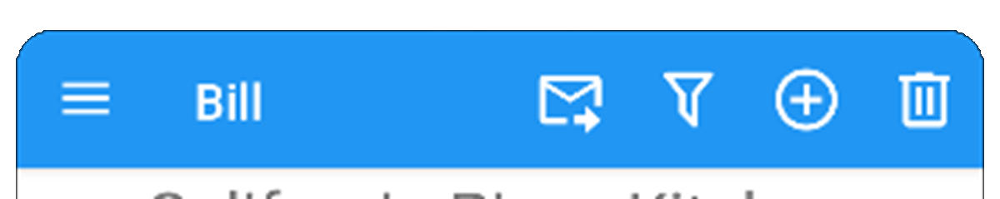

Most DivisiBill pages include a tool bar at the top of the page, typically a colored background with the page title and icons in a contrasting color in the foreground. For example:

The same icons are used on multiple pages. Here is a list of icons you may see (not all are used):
|Name | Icon |----------------------|:---------------😐 | Add | | Back | | Camera | | Cancel | | Check (approve something) | | Close | | Cloud File | | Cloud On or Off | or | Decrement | | Delete | | Delete Map Marker | | Download | | Edit | | Ellipsis | | Exit | | Filter On or Off | or | Flash On or Off | or | Has Image | | Import | | Increment | | List | | Load | | Local File | or | Local Storage On/Off | or | Mail | | Menu | | Null | | OCR | | Person Edit | | Remote (cloud) File | or | Replace | | Restore | | Save | | Search Images | | Send Mail | | Share | | Sort | | TOC | | Undo |